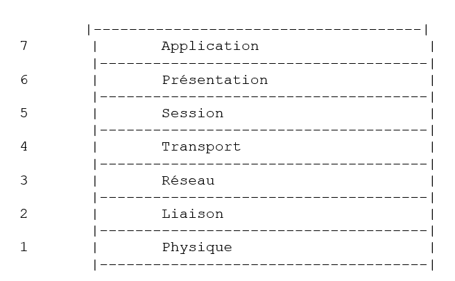
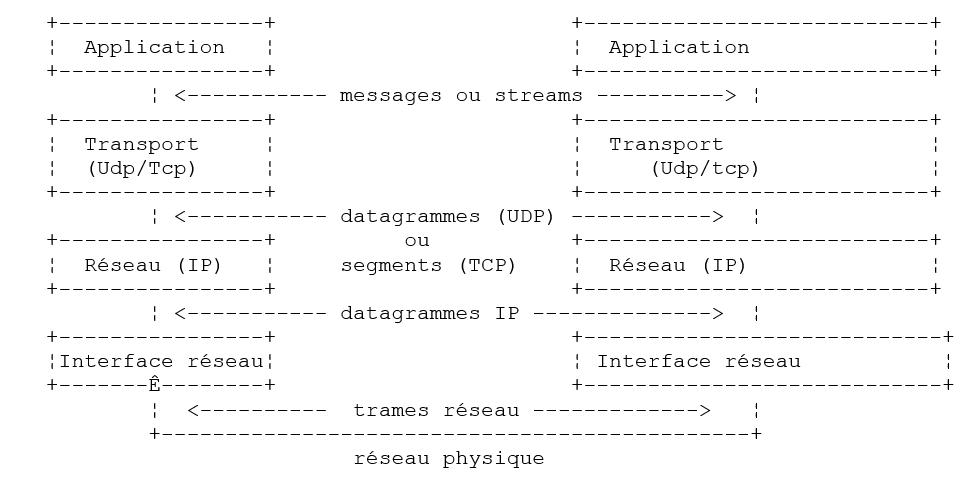
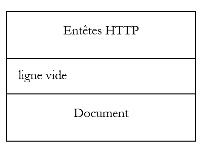
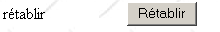
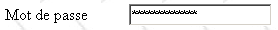

2. Grundlagen
In diesem Kapitel stellen wir die Grundlagen der Webprogrammierung vor. Das Hauptziel besteht darin, die wichtigsten Prinzipien der Webprogrammierung kennenzulernen, bevor diese mit einer bestimmten Sprache und Umgebung in die Praxis umgesetzt werden. Es enthält zahlreiche Beispiele, die Sie am besten selbst ausprobieren sollten, um sich nach und nach mit der Philosophie der Webentwicklung vertraut zu machen.
2.1. Die Komponenten einer Webanwendung

Nummer | Rolle | Gängige Beispiele |
OS Server | Linux, Windows | |
Webserver | Apache (Linux, Windows) IIS (NT), PWS (Win9x) | |
Serverseitig ausgeführte Skripte. Diese können entweder durch Module des Servers oder durch Programme außerhalb des Servers ausgeführt werden (CGI). | PERL (Apache, IIS, PWS) VBSCRIPT (IIS, PWS) JAVASCRIPT (IIS, PWS) PHP (Apache, IIS, PWS) JAVA (Apache, IIS, PWS) C#, VB.NET (IIS) | |
Datenbank – Diese kann sich auf demselben Rechner befinden wie das Programm, das sie nutzt, oder über das Internet auf einem anderen Rechner. | Oracle (Linux, Windows) MySQL (Linux, Windows) Access (Windows) SQL Server (Windows) | |
OS Client | Linux, Windows | |
Webbrowser | Netscape, Internet Explorer | |
Clientseitige Skripte, die im Browser ausgeführt werden. Diese Skripte haben keinen Zugriff auf die Festplatten des Client-Rechners. | VBscript (IE) JavaScript (IE, Netscape) Perl-Skript (IE) Applets JAVA |
2.2. Datenaustausch in einer Webanwendung mit Formular

Client-Rechner, Server-Rechner
Nummer | Rolle |
Der Browser fordert zum ersten Mal eine URL für (http://machine/url) an. Es werden keine Parameter übergeben. | |
Der Webserver sendet ihm die Webseite dieses URL. Diese kann statisch sein oder dynamisch durch ein Serverskript (SA) generiert werden, das möglicherweise Inhalte aus Datenbanken (SB, SC) verwendet hat. In diesem Fall erkennt das Skript, dass die Seite URL ohne Übergabe von Parametern angefordert wurde, und generiert die Startseite WEB. Der Browser empfängt die Seite und zeigt sie an (CA). Browser-seitige Skripte (CB) konnten die vom Server gesendete Startseite möglicherweise verändern. Anschließend wird die Webseite durch Interaktionen zwischen dem Benutzer (CD) und den Skripten (CB) verändert. Insbesondere werden die Formulare ausgefüllt. | |
Der Benutzer bestätigt die Formulardaten, die daraufhin an den Webserver gesendet werden müssen. Der Browser fordert je nach Fall das ursprüngliche URL oder ein anderes Skript erneut an und übermittelt gleichzeitig die Formularwerte an den Server. Dazu kann er zwei Methoden namens GET und POST verwenden. Nach Erhalt der Anfrage des Clients löst der Server das Skript (SA) aus, das der angeforderten URL zugeordnet ist; dieses Skript erkennt die Parameter und verarbeitet sie. | |
Der Server liefert die programmgesteuert erstellte Seite WEB (SA, SB, SC). Dieser Schritt entspricht dem vorherigen Schritt 2. Der Datenaustausch erfolgt nun gemäß den Schritten 2 und 3. |
2.3. Einige Ressourcen
Im Folgenden finden Sie eine Liste mit Ressourcen zur Installation und Nutzung bestimmter Tools für die Webentwicklung. Im Anhang finden Sie eine Anleitung zur Installation dieser Tools.
http://www.apache.org - Apache, Installation und Einsatz, O'Reilly | |
http://www.microsoft.com | |
http://www.activestate.com - Programmieren mit Perl, Larry Wall, O'Reilly - Anwendungen in Perl: CGI, Neuss und Vromans, O'Reilly - Die mit Active Perl gelieferte Dokumentation HTML | |
http://www.php.net - Webprogrammierung mit PHP, Lacroix, Eyrolles - Das Benutzerhandbuch zu PHP ist auf der Website von PHP abrufbar | |
http://msdn.microsoft.com/scripting/vbscript/download/vbsdoc.exe http://msdn.microsoft.com/scripting/default.htm?/scripting/vbscript - Schnittstelle zwischen WEB und der Datenbank unter WinNT, Alex Homer, Eyrolles | |
http://msdn.microsoft.com/scripting/jscript/download/jsdoc.exe http://developer.netscape.com/docs/manuals/index.html | |
http://developer.netscape.com/docs/manuals/index.html | |
http://www.sun.com - JAVA Servlets, Jason Hunter, O'Reilly - Netzwerkprogrammierung mit Java, Elliotte Rusty Harold, O'Reilly - JDBC und Java, George Reese, O'Reilly | |
http://www.mysql.com http://www.oracle.com - Das Handbuch zu MySQL ist auf der Website von MySQL verfügbar - Oracle 8i unter Linux, Gilles Briard, Eyrolles - Oracle 8i unter NT, Gilles Briard, Eyrolles |
2.4. Konventionen
Im Folgenden gehen wir davon aus, dass eine Reihe von Tools installiert wurde, und verwenden die folgenden Bezeichnungen:
Bezeichnung | Bedeutung |
Stammverzeichnis des Apache-Servers | |
Stammverzeichnis der von Apache bereitgestellten Webseiten. Die Webseiten müssen sich in diesem Stammverzeichnis befinden. So entspricht beispielsweise die URL URL http://localhost/page1.htm der Datei <apache-DocumentRoot>\page1.htm. | |
Stammverzeichnis der Verzeichnisstruktur, das mit dem Alias cgi-bin verknüpft ist und in dem CGI-Skripte für Apache abgelegt werden können. So entspricht die URL URL http://localhost/cgi-bin/test1.pl der Datei <apache-cgi-bin>\test1.pl. | |
Stammverzeichnis der von PWS ausgelieferten Webseiten. Unter diesem Stammverzeichnis müssen sich die Webseiten befinden. Somit entspricht die Datei URL http://localhost/page1.htm der Datei <pws-DocumentRoot>\page1.htm. | |
Stammverzeichnis des Perl-Verzeichnisses. Die ausführbare Datei „perl.exe“ befindet sich in der Regel in „<perl>\bin.“ | |
Stammverzeichnis der PHP-Sprachstruktur. Die ausführbare Datei php.exe befindet sich in der Regel in <php>. | |
Stammverzeichnis der Java-Struktur. Die mit Java verbundenen ausführbaren Dateien befinden sich in <java>\bin. | |
im Stammverzeichnis des Tomcat-Servers. Beispiele für Servlets finden sich in <tomcat>\webapps\examples\servlets und Beispiele für Seiten in JSP in <tomcat>\webbapps\examples\jsp |
Für jedes dieser Tools wird auf den Anhang verwiesen, der eine Anleitung zur Installation enthält.
2.5. Statische Webseiten, dynamische Webseiten
Eine statische Seite wird durch eine Datei HTML dargestellt. Eine dynamische Seite hingegen wird vom Webserver „on the fly“ generiert. In diesem Abschnitt stellen wir Ihnen verschiedene Tests mit unterschiedlichen Webservern und Programmiersprachen vor, um die Universalität des Webkonzepts zu veranschaulichen.
2.5.1. Statische Seite HTML (HyperText Markup Language)
Betrachten wir den folgenden HTML-Code:
<html>
<head>
<title>essai 1 : une page statique</title>
</head>
<body>
<center>
<h1>Une page statique...</h1>
</body>
</html>
was die folgende Webseite erzeugt:
Die Tests

-
Starten Sie den Apache-Server
-
Das Skript essai1.html in <apache-DocumentRoot> einfügen
-
Die Seite URL http://localhost/essai1.html mit einem Browser aufrufen
-
Den Apache-Server beenden
-
Den Server PWS starten
-
das Skript essai1.html in <pws-DocumentRoot> einfügen
-
die Seite URL http://localhost/essai1.html mit einem Browser anzeigen
2.5.2. Eine Seite ASP (Active Server Pages)
Das Skript essai2.asp:
<html>
<head>
<title>essai 1 : une page asp</title>
</head>
<body>
<center>
<h1>Une page asp générée dynamiquement par le serveur PWS</h1>
<h2>Il est <% =time %></h2>
<br>
A chaque fois que vous rafraîchissez la page, l'heure change.
</body>
</html>
erzeugt die folgende Webseite:

Der Test
-
Starten Sie den Server PWS
-
Das Skript essai2.asp in <pws-DocumentRoot> einfügen
-
die Seite URL http://localhost/essai2.asp mit einem Browser aufrufen
2.5.3. Ein Skript PERL (Practical Extracting and Reporting Language)
Das Skript essai3.pl:
#!d:\perl\bin\perl.exe
($secondes,$minutes,$heure)=localtime(time);
print <<HTML
Content-type: text/html
<html>
<head>
<title>essai 1 : un script Perl</title>
</head>
<body>
<center>
<h1>Une page générée dynamiquement par un script Perl</h1>
<h2>Il est $heure:$minutes:$secondes</h2>
<br>
A chaque fois que vous rafraîchissez la page, l'heure change.
</body>
</html>
HTML
;
Die erste Zeile enthält den Pfad zur ausführbaren Datei perl.exe. Dieser muss bei Bedarf angepasst werden. Nach der Ausführung durch einen Webserver erzeugt das Skript die folgende Seite:

Der Test
-
Webserver: Apache
-
Zur Information: Sehen Sie sich je nach Apache-Version die Konfigurationsdatei srm.conf oder httpd.conf unter <apache>\confs und suchen Sie die Zeile, die sich auf cgi-bin bezieht, um das Verzeichnis <apache-cgi-bin> zu ermitteln, in dem essai3.pl abgelegt werden soll.
-
Legen Sie das Skript essai3.pl in <apache-cgi-bin> ab
-
Rufen Sie die URL http://localhost/cgi-bin/essai3.pl auf
Beachten Sie, dass das Laden der Seite perl länger dauert als das der Seite asp. Dies liegt daran, dass das Perl-Skript von einem Perl-Interpreter ausgeführt wird, der erst geladen werden muss, bevor das Skript ausgeführt werden kann. Er verbleibt nicht dauerhaft im Arbeitsspeicher.
2.5.4. Ein Skript PHP (Personal Home Page)
Das Skript essai4.php
<html>
<head>
<title>essai 4 : une page php</title>
</head>
<body>
<center>
<h1>Une page PHP générée dynamiquement</h1>
<h2>
<?
$maintenant=time();
echo date("j/m/y, h:i:s",$maintenant);
?>
</h2>
<br>
A chaque fois que vous rafraîchissez la page, l'heure change.
</body>
</html>
Das obige Skript erzeugt die folgende Webseite:
Die Tests


-
Sehen Sie sich die Apache-Konfigurationsdatei srm.conf oder httpd.conf in <Apache>\confs an
-
Zur Information: Überprüfen Sie die Konfigurationszeilen von php
-
Starten Sie den Apache-Server
-
essai4.php in <apache-DocumentRoot> einfügen
-
URL unter http://localhost/essai4.php aufrufen
-
den Server PWS starten
-
Zur Information: Überprüfen Sie die Konfiguration von PWS in Bezug auf PHP
-
essai4.php in <pws-DocumentRoot>\php einbinden
-
URL unter http://localhost/essai4.php aufrufen
2.5.5. Ein Skript JSP (Java Server Pages)
Das Skript heure.jsp
<% //Java-Programm zur Anzeige der Uhrzeit %>
<%@ page import="java.util.*" %>
<%
// Code JAVA zur Berechnung der Uhrzeit
Calendar calendrier=Calendar.getInstance();
int heures=calendrier.get(Calendar.HOUR_OF_DAY);
int minutes=calendrier.get(Calendar.MINUTE);
int secondes=calendrier.get(Calendar.SECOND);
// Stunden, Minuten und Sekunden sind globale Variablen
//, die im Code HTML verwendet werden können
%>
<% // Code HTML %>
<html>
<head>
<title>Page JSP affichant l'heure</title>
</head>
<body>
<center>
<h1>Une page JSP générée dynamiquement</h1>
<h2>Il est <%=heures%>:<%=minutes%>:<%=secondes%></h2>
<br>
<h3>A chaque fois que vous rechargez la page, l'heure change</h3>
</body>
</html>
Nach der Ausführung durch den Webserver erzeugt dieses Skript die folgende Seite:

Die Tests
- Das Skript heure.jsp in <tomcat>\jakarta-tomcat\webapps\examples\jsp (Tomcat 3.x) oder in <tomcat>\webapps\examples\jsp (Tomcat 4.x) ablegen
- Starten Sie den Tomcat-Server
- die Seite URL unter http://localhost:8080/examples/jsp/heure.jsp aufrufen
2.5.6. Fazit
Die vorangegangenen Beispiele haben gezeigt, dass:
- eine Seite HTML dynamisch durch ein Programm generiert werden kann. Darin liegt der Sinn der Webprogrammierung.
- dass die verwendeten Sprachen und Webserver vielfältig sein können. Derzeit lassen sich folgende große Trends beobachten:
- die Kombinationen Apache/PHP (Windows, Linux) und IIS/PHP (Windows)
- die ASP.NET-Technologie auf Windows-Plattformen, die den IIS-Server mit einer .NET-Sprache (C#, VB.NET, …) kombiniert
- die Technologie der Java-Servlets und JSP-Seiten, die mit verschiedenen Servern (Tomcat, Apache, IIS) und auf verschiedenen Plattformen (Windows, Linux) laufen. Diese letzte Technologie wird in diesem Dokument besonders ausführlich behandelt.
2.6. Browser-seitige Skripte
Eine HTML-Seite kann Skripte enthalten, die vom Browser ausgeführt werden. Es gibt zahlreiche browserbasierte Skriptsprachen. Hier sind einige davon:
Sprache | Unterstützte Browser |
VBScript | IE |
JavaScript | IE, Netscape |
PerlScript | IE |
Java | IE, Netscape |
Schauen wir uns ein paar Beispiele an.
2.6.1. Eine Webseite mit einem VBScript-Skript auf der Browserseite
Die Seite vbs1.html
<html>
<head>
<title>essai : une page web avec un script vb</title>
<script language="vbscript">
function reagir
alert "Vous avez cliqué sur le bouton OK"
end function
</script>
</head>
<body>
<center>
<h1>Une page Web avec un script VB</h1>
<table>
<tr>
<td>Cliquez sur le bouton</td>
<td><input type="button" value="OK" name="cmdOK" onclick="reagir"></td>
</tr>
</table>
</body>
</html>
Die oben genannte Seite HTML enthält nicht nur den Code HTML, sondern auch ein Programm, das vom Browser ausgeführt werden soll, der diese Seite geladen hat. Der Code lautet wie folgt:
<script language="vbscript">
function reagir
alert "Vous avez cliqué sur le bouton OK"
end function
</script>
Die Tags <script></script> dienen dazu, Skripte auf der Seite HTML abzugrenzen. Diese Skripte können in verschiedenen Sprachen geschrieben sein, und die Option language des Tags <script> gibt die verwendete Sprache an. Hier ist es VBScript. Wir werden nicht näher auf diese Sprache eingehen. Das obige Skript definiert eine Funktion namens réagir, die eine Meldung anzeigt. Wann wird diese Funktion aufgerufen? Das verrät uns die folgende Codezeile HTML:
Das Attribut onclick gibt den Namen der Funktion an, die aufgerufen werden soll, wenn der Benutzer auf die Schaltfläche OK klickt. Sobald der Browser diese Seite geladen hat und der Benutzer auf die Schaltfläche OK klickt, wird folgende Seite angezeigt:

Die Tests
Nur der Browser IE ist in der Lage, Skripte von VBScript auszuführen. Netscape benötigt hierfür zusätzliche Software-Erweiterungen. Folgende Tests können durchgeführt werden:
-
Apache-Server
-
Skript vbs1.html in <apache-DocumentRoot>
-
die URL http://localhost/vbs1.html mit dem Browser IE aufrufen
-
Server PWS
-
Skript vbs1.html in <pws-DocumentRoot>
-
Rufe die URL http://localhost/vbs1.html mit dem Browser IE auf
2.6.2. Eine Webseite mit einem JavaScript-Skript auf der Browserseite
Die Seite: js1.html
<html>
<head>
<title>essai 4 : une page web avec un script Javascript</title>
<script language="javascript">
function reagir(){
alert ("Vous avez cliqué sur le bouton OK");
}
</script>
</head>
<body>
<center>
<h1>Une page Web avec un script Javascript</h1>
<table>
<tr>
<td>Cliquez sur le bouton</td>
<td><input type="button" value="OK" name="cmdOK" onclick="reagir()"></td>
</tr>
</table>
</body>
</html>
Hier haben wir etwas Ähnliches wie auf der vorherigen Seite, nur dass wir die Sprache VBScript durch JavaScript ersetzt haben. Dieses hat den Vorteil, dass es sowohl vom Browser IE als auch von Netscape unterstützt wird. Die Ausführung liefert dieselben Ergebnisse:

Die Tests
-
Apache-Server
-
Skript js1.html in <apache-DocumentRoot>
-
Aufruf der URL http://localhost/js1.html mit dem Browser IE oder Netscape
-
Server PWS
-
Skript js1.html in <pws-DocumentRoot>
-
Rufen Sie die URL http://localhost/js1.html mit dem Browser IE oder Netscape auf
2.7. Der Austausch zwischen Client und Server
Kehren wir zu unserem Ausgangsdiagramm zurück, das die Akteure einer Webanwendung veranschaulichte:
 |
Wir konzentrieren uns hier auf den Datenaustausch zwischen dem Client-Rechner und dem Server-Rechner. Dieser erfolgt über ein Netzwerk, und es ist sinnvoll, die allgemeine Struktur des Datenaustauschs zwischen zwei entfernten Rechnern noch einmal in Erinnerung zu rufen.
2.7.1. Das Modell OSI
Das von der ISO (Internationale Organisation für Normung) definierte offene Netzwerkmodell mit der Bezeichnung OSI (Open Systems Interconnection Reference Model) beschreibt ein ideales Netzwerk, in dem die Kommunikation zwischen Rechnern durch ein siebenstufiges Modell dargestellt werden kann:
 |
Jede Schicht erhält Dienste von der darunterliegenden Schicht und stellt ihre eigenen Dienste der darüberliegenden Schicht zur Verfügung. Nehmen wir an, zwei Anwendungen auf den verschiedenen Rechnern A und B möchten miteinander kommunizieren: Dies geschieht auf der Ebene der Schicht Application. Sie müssen nicht alle Details der Funktionsweise des Netzwerks kennen: Jede Anwendung übergibt die Informationen, die sie übertragen möchte, an die darunterliegende Schicht, nämlich die Schicht Présentation. Die Anwendung muss daher nur die Schnittstellenregeln zur Schicht Présentation kennen. Sobald sich die Informationen in der Schicht Présentation befinden, werden sie nach anderen Regeln an die Schicht Session weitergeleitet und so weiter, bis die Informationen auf dem physikalischen Medium ankommen und physikalisch an den Zielrechner übertragen werden. Dort durchläuft sie den umgekehrten Prozess, den sie auf dem Absenderrechner durchlaufen hat.
Auf jeder Schicht sendet der für den Versand der Informationen zuständige Senderprozess diese an einen Empfängerprozess auf dem anderen Rechner, der derselben Schicht angehört wie er selbst. Dies geschieht nach bestimmten Regeln, die als Protokoll der jeweiligen Schicht bezeichnet werden. Daraus ergibt sich folgendes endgültiges Kommunikationsschema:
 |
Die verschiedenen Schichten haben folgende Aufgaben:
Gewährleistet die Übertragung von Bits über ein physikalisches Medium. In dieser Schicht finden sich Endgeräte zur Datenverarbeitung (E.T.T.D.), wie z. B. Terminals oder Computer, sowie Geräte zum Abschluss von Datenverbindungen (E.T.C.D.), wie z. B. Modulatoren/Demodulatoren, Multiplexer und Konzentratoren. Die wichtigsten Aspekte auf dieser Ebene sind: . die Wahl der Informationskodierung (analog oder digital) . die Wahl des Übertragungsmodus (synchron oder asynchron). | |
Versteckt die physikalischen Besonderheiten der physikalischen Schicht. Erkennt und korrigiert Übertragungsfehler. | |
Verwaltet den Weg, den die über das Netzwerk gesendeten Informationen nehmen müssen. Dies wird als routage bezeichnet: die Bestimmung der Route, die eine Information nehmen muss, damit sie ihren Empfänger erreicht. | |
Ermöglicht die Kommunikation zwischen zwei Anwendungen, während die vorherigen Schichten nur die Kommunikation zwischen Rechnern zuließen. Ein von dieser Schicht bereitgestellter Dienst kann das Multiplexing sein: Die Transportschicht kann dieselbe Netzwerkverbindung (von Rechner zu Rechner) nutzen, um Informationen mehrerer Anwendungen zu übertragen. | |
In dieser Schicht finden sich Dienste, die es einer Anwendung ermöglichen, eine Arbeitssitzung auf einem Remote-Rechner zu eröffnen und aufrechtzuerhalten. | |
Sie zielt darauf ab, die Darstellung der Daten auf den verschiedenen Rechnern zu vereinheitlichen. So werden Daten, die von Rechner A stammen, von der Schicht Présentation des Rechners A gemäß einem Standardformat „aufbereitet“, bevor sie über das Netzwerk gesendet werden. Sobald sie die Schicht Présentation des Zielrechners B erreichen, der sie anhand ihres Standardformats erkennt, werden sie auf andere Weise aufbereitet, damit die Anwendung des Rechners B sie erkennen kann. | |
Auf dieser Ebene befinden sich die Anwendungen, die in der Regel nah am Benutzer angesiedelt sind, wie beispielsweise E-Mail oder Dateiübertragung. |
2.7.2. Das Modell TCP/IP
Das Modell OSI ist ein ideales Modell. Die Protokollsuite TCP/IP nähert sich diesem in folgender Form an:
 |
- Die Netzwerkschnittstelle (die Netzwerkkarte des Computers) übernimmt die Funktionen der Schichten 1 und 2 des Modells OSI
- Die Schicht IP (Internet Protocol) übernimmt die Funktionen der Schicht 3 (Netzwerk)
- Die Schicht TCP (Transfer Control Protocol) oder UDP (User Datagram Protocol) übernimmt die Funktionen der Schicht 4 (Transport). Das Protokoll TCP stellt sicher, dass die zwischen den Rechnern ausgetauschten Datenpakete ihr Ziel erreichen. Ist dies nicht der Fall, sendet es die fehlgeleiteten Pakete zurück. Das Protokoll UDP übernimmt diese Aufgabe nicht, sodass es dem Anwendungsentwickler obliegt, dies zu tun. Aus diesem Grund wird im Internet, das kein zu 100 % zuverlässiges Netzwerk ist, vor allem das Protokoll TCP verwendet. Man spricht dann von einem TCP-IP-Netzwerk.
- Die Anwendungsschicht deckt die Funktionen der Schichten 5 bis 7 des OSI-Modells ab.
Webanwendungen befinden sich in der Schicht Application und basieren somit auf den Protokollen TCP-IP. Die Schichten Application der Client- und Server-Rechner tauschen Nachrichten aus, die zur Weiterleitung an ihren Bestimmungsort an die Schichten 1 bis 4 des Modells übergeben werden. Um miteinander kommunizieren zu können, müssen die Anwendungsschichten beider Rechner dieselbe Sprache bzw. dasselbe Protokoll „sprechen“. Das Protokoll für Webanwendungen heißt HTTP (HyperText Transfer Protocol). Es handelt sich um ein textbasiertes Protokoll, c.a.d, bei dem die Rechner Textzeilen über das Netzwerk austauschen, um sich zu verständigen. Dieser Austausch ist standardisiert, sodass dem Client eine bestimmte Anzahl von Nachrichten zur Verfügung steht, um dem Server genau mitzuteilen, was er möchte, und der Server ebenfalls über eine bestimmte Anzahl von Nachrichten verfügt, um dem Client seine Antwort zu übermitteln. Dieser Nachrichtenaustausch hat folgende Form:
 |
Client --> Server
Wenn der Client seine Anfrage an den Webserver sendet, übermittelt er
- Textzeilen im Format HTTP, um anzugeben, was er möchte
- eine Leerzeile
- optional ein Dokument
Server --> Client
Wenn der Server dem Client antwortet, sendet er
- Textzeilen im Format HTTP, um anzugeben, was er sendet
- eine leere Zeile
- optional ein Dokument
Der Datenaustausch hat also in beide Richtungen die gleiche Form. In beiden Fällen kann ein Dokument gesendet werden, auch wenn es selten vorkommt, dass ein Client ein Dokument an den Server sendet. Das Protokoll HTTP sieht dies jedoch vor. Dadurch können beispielsweise Kunden eines Internetanbieters verschiedene Dokumente auf ihre bei diesem Anbieter gehostete persönliche Website hochladen. Die ausgetauschten Dokumente können beliebiger Art sein. Nehmen wir einen Browser, der eine Webseite mit Bildern anfordert:
- Der Browser stellt eine Verbindung zum Webserver her und fordert die gewünschte Seite an. Die angeforderten Ressourcen werden eindeutig durch URL (Uniform Resource Locator) bezeichnet. Der Browser sendet lediglich HTTP-Header und kein Dokument.
- Der Server antwortet ihm. Er sendet zunächst HTTP-Header, die angeben, welche Art von Antwort er sendet. Dies kann ein Fehler sein, wenn die angeforderte Seite nicht existiert. Wenn die Seite existiert, gibt der Server in den HTTP-Header seiner Antwort an, dass er im Anschluss daran ein Dokument im Format HTML (HyperText Markup Language) senden wird. Dieses Dokument besteht aus einer Folge von Textzeilen im Format HTML. Ein HTML-Text enthält Tags (Markierungen), die dem Browser Anweisungen zur Darstellung des Textes geben.
- Der Client erkennt anhand der HTTP-Header des Servers, dass er ein HTML-Dokument erhalten wird. Er analysiert dieses Dokument und stellt möglicherweise fest, dass es Bildverweise enthält. Diese sind im Dokument HTML nicht enthalten. Daher sendet er eine neue Anfrage an denselben Webserver, um das erste benötigte Bild anzufordern. Diese Anfrage ist identisch mit der in Schritt 1, nur dass die angeforderte Ressource eine andere ist. Der Server bearbeitet diese Anfrage, indem er dem Client das angeforderte Bild sendet. Diesmal geben die Header HTTP in seiner Antwort an, dass es sich bei dem gesendeten Dokument um ein Bild und nicht um ein Dokument HTML handelt.
- Der Client empfängt das gesendete Bild. Die Schritte 3 und 4 werden so lange wiederholt, bis der Client (in der Regel ein Browser) über alle Dokumente verfügt, die er zur Anzeige der gesamten Seite benötigt.
2.7.3. Das Protokoll HTTP
Lassen Sie uns das Protokoll HTTP anhand von Beispielen näher betrachten. Was tauschen ein Browser und ein Webserver untereinander aus?
2.7.3.1. Die Antwort eines HTTP-Servers
Hier werden wir sehen, wie ein Webserver auf Anfragen seiner Clients reagiert. Der Webdienst oder HTTP-Dienst ist ein TCP-IP-Dienst, der normalerweise auf Port 80 läuft. Er könnte jedoch auch auf einem anderen Port laufen. In diesem Fall müsste der Client-Browser diesen Port in der von ihm gesendeten Anfrage angeben. Eine Anfrage hat im Allgemeinen folgende Form:
Protokoll://[:port]-Rechner/Pfad/Infos
mit
Protokoll | http für den Webdienst. Ein Browser kann auch als Client für FTP-, News-, Telnet-Dienste usw. dienen. |
Rechner | Name des Rechners, auf dem der Webdienst läuft |
Port | Port des Webdienstes. Bei Port 80 kann die Portnummer weggelassen werden. Dies ist der häufigste Fall |
Pfad | Pfad, der auf die angeforderte Ressource verweist |
Infos | zusätzliche Informationen, die dem Server übermittelt werden, um die Anfrage des Clients zu präzisieren |
Was macht ein Browser, wenn ein Benutzer das Laden einer URL anfordert?
- Er baut eine TCP-IP-Verbindung mit dem Rechner und dem Port auf, die im Abschnitt „machine[:port]“ des URL angegeben sind. Eine TCP-IP-Verbindung zu öffnen bedeutet, eine „Kommunikationsverbindung“ zwischen zwei Rechnern herzustellen. Sobald diese Verbindung hergestellt ist, werden alle zwischen den beiden Rechnern ausgetauschten Informationen über sie übertragen. Die Erstellung dieser Verbindung TCP-IP beinhaltet noch nicht das Webprotokoll HTTP.
- Sobald die Verbindung TCP-IP hergestellt ist, sendet der Client seine Anfrage an den Webserver, indem er Textzeilen (Befehle) im Format HTTP an ihn übermittelt. Er sendet dem Server den Teil „Pfad/Informationen“ des URL
- Der Server antwortet auf die gleiche Weise und über dieselbe Verbindung
- Einer der beiden Partner trifft die Entscheidung, die Verbindung zu schließen. Dies hängt vom verwendeten Protokoll HTTP ab. Beim Protokoll HTTP 1.0 schließt der Server die Verbindung nach jeder seiner Antworten. Dies zwingt einen Client, der mehrere Anfragen stellen muss, um die verschiedenen Dokumente zu erhalten, aus denen eine Webseite besteht, bei jeder Anfrage eine neue Verbindung zu öffnen, was mit Kosten verbunden ist. Beim Protokoll HTTP/1.1 kann der Client den Server anweisen, die Verbindung offen zu halten, bis er ihn auffordert, sie zu schließen. Er kann somit alle Dokumente einer Webseite über eine einzige Verbindung abrufen und die Verbindung selbst schließen, sobald das letzte Dokument empfangen wurde. Der Server erkennt diese Schließung und schließt die Verbindung ebenfalls.
Um den Datenaustausch zwischen einem Client und einem Webserver zu veranschaulichen, verwenden wir einen generischen TCP-Client. Dabei handelt es sich um ein Programm, das als Client für jeden Dienst fungieren kann, der über ein auf Textzeilen basierendes Kommunikationsprotokoll verfügt, wie es beim Protokoll HTTP der Fall ist. Diese Textzeilen werden vom Benutzer über die Tastatur eingegeben. Dazu muss er das Kommunikationsprotokoll des Dienstes kennen, den er erreichen möchte. Die Antwort des Servers wird anschließend auf dem Bildschirm angezeigt. Das Programm wurde in Java geschrieben und ist im Anhang zu finden. Wir verwenden es hier in einem DOS-Fenster unter Windows und rufen es wie folgt auf:
java clientTCPgenerique machine port
mit
machine | Name des Rechners, auf dem der anzufragende Dienst läuft |
port | Port, über den der Dienst bereitgestellt wird |
Mit diesen beiden Angaben baut das Programm eine Verbindung TCP-IP mit dem angegebenen Rechner und Port auf. Diese Verbindung dient dem Austausch von Textzeilen zwischen dem Client und dem Webserver. Die Zeilen des Clients werden vom Benutzer über die Tastatur eingegeben und an den Server gesendet. Die vom Server als Antwort zurückgesendeten Textzeilen werden auf dem Bildschirm angezeigt. So kann ein direkter Dialog zwischen dem Benutzer an der Tastatur und dem Webserver zustande kommen. Probieren wir dies anhand der bereits vorgestellten Beispiele aus. Wir hatten die folgende statische Seite HTML erstellt:
<html>
<head>
<title>essai 1 : une page statique</title>
</head>
<body>
<center>
<h1>Une page statique...</h1>
</body>
</html>
das wir in einem Browser anzeigen:

Man sieht, dass die angeforderte URL „URL“ lautet: http://localhost:81/essais/essai1.html. Der Webserver ist also localhost (=lokaler Rechner) und der Port 81. Wenn man den Quelltext dieser Webseite (Ansicht/Quelltext) aufruft, findet man den ursprünglich erstellten Text wieder:

Verwenden wir nun unseren generischen Client TCP, um denselben URL abzufragen:
Dos>java clientTCPgenerique localhost 81
Commandes :
GET /essais/essai1.html HTTP/1.0
<-- HTTP/1.1 200 OK
<-- Date: Mon, 08 Jul 2002 08:07:46 GMT
<-- Server: Apache/1.3.24 (Win32) PHP/4.2.0
<-- Last-Modified: Mon, 08 Jul 2002 08:00:30 GMT
<-- ETag: "0-a1-3d29469e"
<-- Accept-Ranges: bytes
<-- Content-Length: 161
<-- Connection: close
<-- Content-Type: text/html
<--
<-- <html>
<-- <head>
<-- <title>essai 1 : une page statique</title>
<-- </head>
<-- <body>
<-- <center>
<-- <h1>Une page statique...</h1>
<-- </body>
<-- </html>
Beim Start des Clients über den Befehl „java clientTCPgenerique localhost 81“ wurde eine Verbindung zwischen dem Programm und dem Webserver hergestellt, der auf demselben Rechner (localhost) und auf Port 81 läuft. Der Client-Server-Datenaustausch im Format HTTP kann beginnen. Zur Erinnerung: Dieser besteht aus drei Komponenten:
- HTTP-Header
- Leerzeile
- optionale Daten
In unserem Beispiel sendet der Client nur eine Anfrage:
GET /essais/essai1.html HTTP/1.0
Diese Zeile besteht aus drei Komponenten:
Befehl HTTP zum Abrufen einer Ressource. Es gibt noch weitere: HEAD fordert eine Ressource an, beschränkt sich dabei jedoch auf die Header HTTP der Serverantwort. Die Ressource selbst wird nicht gesendet. PUT ermöglicht es dem Client, ein Dokument an den Server zu senden | |
angeforderte Ressource | |
Verwendete QZXW2HTML-Protokollversion HTTP. Hier 1.0. Das bedeutet, dass der Server die Verbindung schließt, sobald er seine Antwort gesendet hat |
Auf die Header HTTP muss immer eine Leerzeile folgen. Dies wurde hier vom Client so umgesetzt. Auf diese Weise weiß der Client oder der Server, dass der Teil HTTP des Datenaustauschs beendet ist. Für den Client ist der Vorgang hier abgeschlossen. Er hat kein Dokument zu senden. Nun beginnt die Antwort des Servers, die in unserem Beispiel aus allen Zeilen besteht, die mit dem Zeichen <-- beginnen. Er sendet zunächst eine Reihe von HTTP-Headern, gefolgt von einer Leerzeile:
<-- HTTP/1.1 200 OK
<-- Date: Mon, 08 Jul 2002 08:07:46 GMT
<-- Server: Apache/1.3.24 (Win32) PHP/4.2.0
<-- Last-Modified: Mon, 08 Jul 2002 08:00:30 GMT
<-- ETag: "0-a1-3d29469e"
<-- Accept-Ranges: bytes
<-- Content-Length: 161
<-- Connection: close
<-- Content-Type: text/html
<--
Der Server gibt an,
| |
Datum und Uhrzeit der Antwort | |
Der Server identifiziert sich. In diesem Fall handelt es sich um einen Apache-Server | |
Datum der letzten Änderung der vom Client angeforderten Ressource | |
... | |
Maßeinheit der gesendeten Daten. Hier das Byte | |
Anzahl der Bytes des Dokuments, das nach den Kopfzeilen gesendet wird: HTTP. Diese Zahl entspricht der Dateigröße in Bytes: essai1.html: | |
Der Server teilt mit, dass er die Verbindung trennen wird, sobald das Dokument gesendet wurde | |
Der Server teilt mit, dass er Text im Format HTML (HTML) senden wird. |
Der Client empfängt diese Header HTTP und weiß nun, dass er 161 Bytes empfangen wird, die ein Dokument HTML darstellen. Der Server sendet diese 161 Bytes unmittelbar nach der Leerzeile, die das Ende der Header HTTP signalisierte:
<-- <html>
<-- <head>
<-- <title>essai 1 : une page statique</title>
<-- </head>
<-- <body>
<-- <center>
<-- <h1>Une page statique...</h1>
<-- </body>
<-- </html>
Hier erkennt man die ursprünglich erstellte Datei HTML. Wäre unser Client ein Browser, würde er diese Textzeilen nach dem Empfang interpretieren, um dem Benutzer über die Tastatur die folgende Seite anzuzeigen:

Verwenden wir erneut unseren generischen Client TCP, um dieselbe Ressource abzufragen, diesmal jedoch mit dem Befehl HEAD, der nur die Antwort-Header anfordert:
Dos>java.bat clientTCPgenerique localhost 81
Commandes :
HEAD /essais/essai1.html HTTP/1.1
Host: localhost:81
<-- HTTP/1.1 200 OK
<-- Date: Mon, 08 Jul 2002 09:07:25 GMT
<-- Server: Apache/1.3.24 (Win32) PHP/4.2.0
<-- Last-Modified: Mon, 08 Jul 2002 08:00:30 GMT
<-- ETag: "0-a1-3d29469e"
<-- Accept-Ranges: bytes
<-- Content-Length: 161
<-- Content-Type: text/html
<--
Wir erhalten das gleiche Ergebnis wie zuvor, jedoch ohne das Dokument HTML. Es sei angemerkt, dass der Kunde in seiner Anfrage HEAD angegeben hat, dass er das Protokoll HTTP Version 1.1 verwendet. Dadurch ist er gezwungen, einen zweiten Header HTTP zu senden, in dem das Paar machine:port angegeben wird, das der Client abfragen möchte: Host: localhost:81.
Nun fordern wir ein Bild sowohl mit einem Browser als auch mit dem generischen Client TCP an. Zunächst mit einem Browser:

Die Datei univ01.gif ist 3167 Byte groß:
Verwenden wir nun den generischen Client TCP:
E:\data\serge\JAVA\SOCKETS\client générique>java clientTCPgenerique localhost 81
Commandes :
HEAD /images/univ01.gif HTTP/1.1
host: localhost:81
<-- HTTP/1.1 200 OK
<-- Date: Tue, 09 Jul 2002 13:53:24 GMT
<-- Server: Apache/1.3.24 (Win32) PHP/4.2.0
<-- Last-Modified: Fri, 14 Apr 2000 11:37:42 GMT
<-- ETag: "0-c5f-38f70306"
<-- Accept-Ranges: bytes
<-- Content-Length: 3167
<-- Content-Type: image/gif
<--
Beachten Sie folgende Punkte in der Antwort des Servers:
| |
| |
|
2.7.3.2. Die Anfrage eines HTTP-Clients
Stellen wir uns nun folgende Frage: Wenn wir ein Programm schreiben wollen, das mit einem Webserver „kommuniziert“, welche Befehle muss es an den Webserver senden, um eine bestimmte Ressource abzurufen? In den vorangegangenen Beispielen haben wir bereits einen ersten Ansatz für eine Antwort erhalten. Wir sind auf drei Befehle gestoßen:
| |
| |
|
Es gibt noch weitere Befehle. Um diese zu entdecken, werden wir nun einen generischen Server TCP verwenden. Dabei handelt es sich um ein in Java geschriebenes Programm, das Sie ebenfalls im Anhang finden. Es wird gestartet mit: java serveurTCPgenerique portEcoute, wobei portEcoute der Port ist, über den sich die Clients verbinden müssen. Das Programm serveurTCPgenerique
- zeigt auf dem Bildschirm die von den Clients gesendeten Befehle an
- sendet ihnen als Antwort die Textzeilen, die ein Benutzer über die Tastatur eingegeben hat. Letzterer fungiert also als Server. In unserem Beispiel übernimmt der Benutzer an der Tastatur die Rolle eines Webdienstes.
Simulieren wir nun einen Webserver, indem wir unseren generischen Server auf Port 88 starten:
Dos> java serveurTCPgenerique 88
Serveur générique lancé sur le port 88
Öffnen wir nun einen Browser und rufen die Seite „URL“ unter http://localhost:88/exemple.html auf. Der Browser stellt dann eine Verbindung zum Port 88 des Rechners localhost her und fordert anschließend die Seite /exemple.html an:

Sehen wir uns nun das Fenster unseres Servers an, das anzeigt, was der Client ihm gesendet hat (einige Zeilen, die für die Funktionsweise des Programms serveurTCPgenerique spezifisch sind, wurden der Einfachheit halber weggelassen):
Dos>java serveurTCPgenerique 88
Serveur générique lancé sur le port 88
...
<-- GET /exemple.html HTTP/1.1
<-- Accept: image/gif, image/x-xbitmap, image/jpeg, image/pjpeg, application/msword, */*
<-- Accept-Language: fr
<-- Accept-Encoding: gzip, deflate
<-- User-Agent: Mozilla/4.0 (compatible; MSIE 6.0; Windows NT 5.0; .NET CLR 1.0.3705; .NET CLR 1.0.2 914)
<-- Host: localhost:88
<-- Connection: Keep-Alive
<--
Die Zeilen, denen das Zeichen <-- vorangestellt ist, wurden vom Client gesendet. So stoßen wir auf die Header HTTP, die uns bisher noch nicht begegnet sind:
| |
| |
| |
| |
|
Die vom Browser gesendeten Header HTTP enden wie erwartet mit einer leeren Zeile.
Erstellen wir eine Antwort für unseren Client. Der Benutzer an der Tastatur ist hier der eigentliche Server und kann die Antwort manuell erstellen. Erinnern wir uns an die Antwort eines Webservers aus einem früheren Beispiel:
<-- HTTP/1.1 200 OK
<-- Date: Mon, 08 Jul 2002 08:07:46 GMT
<-- Server: Apache/1.3.24 (Win32) PHP/4.2.0
<-- Last-Modified: Mon, 08 Jul 2002 08:00:30 GMT
<-- ETag: "0-a1-3d29469e"
<-- Accept-Ranges: bytes
<-- Content-Length: 161
<-- Connection: close
<-- Content-Type: text/html
<--
<-- <html>
<-- <head>
<-- <title>essai 1 : une page statique</title>
<-- </head>
<-- <body>
<-- <center>
<-- <h1>Une page statique...</h1>
<-- </body>
<-- </html>
Versuchen wir, eine ähnliche Antwort manuell (über die Tastatur) zu erstellen. Die Zeilen, die mit --> : beginnen, werden an den Client gesendet:
...
<-- Host: localhost:88
<-- Connection: Keep-Alive
<--
--> : HTTP/1.1 200 OK
--> : Server: serveur tcp generique
--> : Connection: close
--> : Content-Type: text/html
--> :
--> : <html>
--> : <head><title>Serveur generique</title></head>
--> : <body>
--> : <center>
--> : <h2>Reponse du serveur generique</h2>
--> : </center>
--> : </body>
--> : </html>
fin
Der Befehl fin ist spezifisch für den Betrieb des Programms serveurTCPgenerique. Er beendet die Ausführung des Programms und schließt die Verbindung vom Server zum Client. Wir haben uns in unserer Antwort auf die folgenden HTTP-Header beschränkt:
HTTP/1.1 200 OK
--> : Server: serveur tcp generique
--> : Connection: close
--> : Content-Type: text/html
--> :
Wir geben die Größe der Datei, die wir senden werden (Content-Length), nicht an, sondern geben lediglich an, dass wir die Verbindung (Connection: close) nach dem Senden dieser Datei schließen werden. Das reicht für den Browser aus. Sobald der Browser sieht, dass die Verbindung geschlossen wurde, weiß er, dass die Antwort des Servers abgeschlossen ist, und zeigt die Seite HTML an, die ihm gesendet wurde. Diese lautet wie folgt:
--> : <html>
--> : <head><title>Serveur generique</title></head>
--> : <body>
--> : <center>
--> : <h2>Reponse du serveur generique</h2>
--> : </center>
--> : </body>
--> : </html>
Der Browser zeigt dann die folgende Seite an:

Wenn man oben den Befehl View/Source eingibt, um zu sehen, was der Browser empfangen hat, erhält man:

Das heißt, genau das, was vom generischen Server gesendet wurde.
2.8. Die Sprache HTML
Ein Webbrowser kann verschiedene Dokumente anzeigen, wobei das häufigste das Dokument HTML (HyperText Markup Language) ist. Dabei handelt es sich um einen Text, der mit Tags der Form <balise>texte</balise> formatiert ist. So wird der Text „<B>important</B>“ den wichtigen Text in Fettdruck anzeigen. Es gibt auch einzelne Tags wie das Tag „<hr>“, das eine horizontale Linie anzeigt. Wir werden hier nicht auf alle Tags eingehen, die in einem HTML-Text vorkommen können. Es gibt zahlreiche Programme, mit denen man eine Webseite erstellen kann, ohne eine einzige Zeile Code zu schreiben. Diese Tools generieren automatisch den Code für ein Layout, das mit der Maus und vordefinierten Steuerelementen erstellt wurde. So kann man (mit der Maus) eine Tabelle in die Seite einfügen und anschließend den von der Software generierten HTML-Code einsehen, um herauszufinden, welche Tags zur Definition einer Tabelle auf einer Webseite verwendet werden müssen. Einfacher geht es nicht. Außerdem sind Kenntnisse der Sprache HTML unerlässlich, da dynamische Webanwendungen den an die Web-Clients zu sendenden Code HTML selbst generieren müssen. Dieser Code wird programmgesteuert generiert, und man muss natürlich wissen, was generiert werden muss, damit der Client die gewünschte Webseite erhält.
Zusammenfassend lässt sich sagen, dass man keineswegs die gesamte Sprache HTML beherrschen muss, um mit der Webprogrammierung zu beginnen. Allerdings sind diese Kenntnisse notwendig und können durch die Verwendung von WYSIWYG-Software zur Erstellung von Webseiten wie Word, FrontPage, DreamWeaver und Dutzenden anderen erworben werden. Eine weitere Möglichkeit, die Feinheiten der Sprache HTML zu entdecken, besteht darin, im Internet zu stöbern und den Quellcode von Seiten anzuzeigen, die interessante und Ihnen noch unbekannte Funktionen aufweisen.
2.8.1. Ein Beispiel
Betrachten wir das folgende Beispiel, das mit FrontPage Express erstellt wurde, einem kostenlosen Tool, das im Lieferumfang des Internet Explorers enthalten ist. Der von Frontpage generierte Code wurde hier bereinigt. Dieses Beispiel zeigt einige Elemente, die in einem Webdokument vorkommen können, wie zum Beispiel:
- eine Tabelle
- ein Bild
- einen Link

Ein HTML-Dokument hat im Allgemeinen folgende Form:
Das gesamte Dokument wird von den Tags <html>...</html> umschlossen. Es besteht aus zwei Teilen:
- <head>...</head>: Dies ist der nicht sichtbare Teil des Dokuments. Er enthält Informationen für den Browser, der das Dokument anzeigen wird. Oft findet man hier das Tag <title>...</title>, das den Text festlegt, der in der Titelleiste des Browsers angezeigt wird. Außerdem können hier weitere Tags vorkommen, insbesondere solche, die die Schlüsselwörter des Dokuments definieren – Schlüsselwörter, die anschließend von Suchmaschinen verwendet werden. In diesem Teil können sich auch Skripte befinden, die meist in JavaScript oder VBScript geschrieben sind und vom Browser ausgeführt werden.
- <body-Attribute>...</body>: Dies ist der Teil, der vom Browser angezeigt wird. Die in diesem Teil enthaltenen Tags HTML geben dem Browser die „gewünschte“ visuelle Darstellung des Dokuments vor. Jeder Browser interpretiert diese Tags auf seine eigene Weise. Zwei Browser können daher ein und dasselbe Webdokument unterschiedlich darstellen. Dies ist in der Regel eine der Herausforderungen für Webdesigner.
Der Code HTML unseres Beispieldokuments lautet wie folgt:
<html>
<head>
<title>balises</title>
</head>
<body background="/images/standard.jpg">
<center>
<h1>Les balises HTML</h1>
<hr>
</center>
<table border="1">
<tr>
<td>cellule(1,1)</td>
<td valign="middle" align="center" width="150">cellule(1,2)</td>
<td>cellule(1,3)</td>
</tr>
<tr>
<td>cellule(2,1)</td>
<td>cellule(2,2)</td>
<td>cellule(2,3</td>
</tr>
</table>
<table border="0">
<tr>
<td>Une image</td>
<td><img border="0" src="/images/univ01.gif" width="80" height="95"></td>
</tr>
<tr>
<td>le site de l'ISTIA</td>
<td><a href="http://istia.univ-angers.fr">ici</a></td>
</tr>
</table>
</body>
</html>
Im Code wurden ausschließlich die Punkte hervorgehoben, die für uns von Interesse sind:
Element | Tags und Beispiele HTML |
<title>balises</title> balises erscheint in der Titelleiste des Browsers, der das Dokument anzeigt | |
<hr>: Zeigt einen horizontalen Strich an | |
<table-Attribute>....</table>: zum Definieren der Tabelle <tr Attribute>...</tr>: zum Definieren einer Zeile <td Attribute>...</td>: zum Definieren einer Zelle Beispiele: <table border="1">...</table>: Das Attribut „border“ legt die Dicke des Tabellenrandes fest <td valign="middle" align="center" width="150">Zelle(1,2)</td>: Definiert eine Zelle, deren Inhalt „Zelle(1,2)“ lautet. Dieser Inhalt wird vertikal (valign="middle") und horizontal (align="center") zentriert. Die Zelle hat eine Breite von 150 Pixeln (width="150") | |
<img border="0" src="/images/univ01.gif" width="80" height="95">: Definiert ein Bild ohne Rahmen („border=0“), mit einer Höhe von 95 Pixeln (height="95"), einer Breite von 80 Pixeln (width="80") und dessen Quelldatei sich unter /images/univ01.gif auf dem Webserver befindet (src="/images/univ01.gif"). Dieser Link befindet sich in einem Webdokument, das mit dem URL http://localhost:81/html/balises.htm erstellt wurde. Daher fordert der Browser die Datei URL http://localhost:81/images/univ01.gif an, um das hier referenzierte Bild zu erhalten. | |
<a href="http://istia.univ-angers.fr">hier</a>: bewirkt, dass der Text ici als Link zu URL http://istia.univ-angers.fr dient. | |
<body background="/images/standard.jpg">: Gibt an, dass sich das Bild, das als Seitenhintergrund dienen soll, unter URL /images/standard.jpg auf dem Webserver befindet. In unserem Beispiel fordert der Browser die URL URL http://localhost:81/images/standard.jpg an, um dieses Hintergrundbild abzurufen. |
An diesem einfachen Beispiel wird deutlich, dass der Browser drei Anfragen an den Server stellen muss, um das gesamte Dokument aufzubauen:
- http://localhost:81/html/balises.htm, um den Quellcode HTML des Dokuments abzurufen
- http://localhost:81/images/univ01.gif, um das Bild univ01.gif abzurufen
- http://localhost:81/images/standard.jpg, um das Hintergrundbild standard.jpg abzurufen
Das folgende Beispiel zeigt ein Webformular, das ebenfalls mit FrontPage erstellt wurde.

Der von FrontPage generierte und etwas bereinigte Code HTML lautet wie folgt:
<html>
<head>
<title>balises</title>
<script language="JavaScript">
function effacer(){
alert("Vous avez cliqué sur le bouton Effacer");
}//löschen
</script>
</head>
<body background="/images/standard.jpg">
<form method="POST" >
<table border="0">
<tr>
<td>Etes-vous marié(e)</td>
<td>
<input type="radio" value="Oui" name="R1">Oui
<input type="radio" name="R1" value="non" checked>Non
</td>
</tr>
<tr>
<td>Cases à cocher</td>
<td>
<input type="checkbox" name="C1" value="un">1
<input type="checkbox" name="C2" value="deux" checked>2
<input type="checkbox" name="C3" value="trois">3
</td>
</tr>
<tr>
<td>Champ de saisie</td>
<td>
<input type="text" name="txtSaisie" size="20" value="qqs mots">
</td>
</tr>
<tr>
<td>Mot de passe</td>
<td>
<input type="password" name="txtMdp" size="20" value="unMotDePasse">
</td>
</tr>
<tr>
<td>Boîte de saisie</td>
<td>
<textarea rows="2" name="areaSaisie" cols="20">
ligne1
ligne2
ligne3
</textarea>
</td>
</tr>
<tr>
<td>combo</td>
<td>
<select size="1" name="cmbValeurs">
<option>choix1</option>
<option selected>choix2</option>
<option>choix3</option>
</select>
</td>
</tr>
<tr>
<td>liste à choix simple</td>
<td>
<select size="3" name="lst1">
<option selected>liste1</option>
<option>liste2</option>
<option>liste3</option>
<option>liste4</option>
<option>liste5</option>
</select>
</td>
</tr>
<tr>
<td>liste à choix multiple</td>
<td>
<select size="3" name="lst2" multiple>
<option>liste1</option>
<option>liste2</option>
<option selected>liste3</option>
<option>liste4</option>
<option>liste5</option>
</select>
</td>
</tr>
<tr>
<td>bouton</td>
<td>
<input type="button" value="Effacer" name="cmdEffacer" onclick="effacer()">
</td>
</tr>
<tr>
<td>envoyer</td>
<td>
<input type="submit" value="Envoyer" name="cmdRenvoyer">
</td>
</tr>
<tr>
<td>rétablir</td>
<td>
<input type="reset" value="Rétablir" name="cmdRétablir">
</td>
</tr>
</table>
<input type="hidden" name="secret" value="uneValeur">
</form>
</body>
</html>
Die visuelle Überprüfung <--> Tag HTML ergibt Folgendes:
Prüfung | Tag HTML |
<form method="POST" > | |
<input type="text" name="txtSaisie" size="20" value="ein paar Wörter"> | |
<input type="password" name="txtMdp" size="20" value="unMotDePasse"> | |
<textarea rows="2" name="areaSaisie" cols="20"> Zeile 1 Zeile 2 Zeile 3 </textarea> | |
<input type="radio" value="Ja" name="R1">Ja <input type="radio" name="R1" value="nein" checked>Nein | |
<input type="checkbox" name="C1" value="eins">1 <input type="checkbox" name="C2" value="zwei" checked>2 <input type="checkbox" name="C3" value="drei">3 | |
<select size="1" name="cmbValeurs"> <option>Auswahl 1</option> <option selected>Auswahl 2</option> <option>Option 3</option> </select> | |
<select size="3" name="lst1"> <option selected>Liste1</option> <option>Liste 2</option> <option>Liste 3</option> <option>Liste 4</option> <option>Liste 5</option> </select> | |
<select size="3" name="lst2" multiple> <option>Liste1</option> <option>Liste 2</option> <option selected>Liste 3</option> <option>Liste 4</option> <option>Liste 5</option> </select> | |
<input type="submit" value="Senden" name="cmdRenvoyer"> | |
<input type="reset" value="Zurücksetzen" name="cmdRétablir"> | |
<input type="button" value="Löschen" name="cmdEffacer" onclick="effacer()"> |
Sehen wir uns diese verschiedenen Steuerelemente einmal genauer an.
2.8.1.1. Das Formular
<form method="POST" > |
<form name="..." method="..." action="...">...</form> | |
name="frmexemple": Name des Formulars method="..." : Methode, die vom Browser verwendet wird, um die im Formular erfassten Werte an den Webserver zu senden action="..." : URL, an die die im Formular erfassten Werte gesendet werden. Ein Webformular wird von den Tags <form>...</form> umschlossen. Das Formular kann einen Namen haben (name="xx"). Dies gilt für alle Steuerelemente, die in einem Formular vorkommen können. Dieser Name ist nützlich, wenn das Webdokument Skripte enthält, die auf Elemente des Formulars verweisen müssen. Der Zweck eines Formulars besteht darin, vom Benutzer über Tastatur oder Maus eingegebene Informationen zu sammeln und diese an eine URL des Webservers zu senden. An welche? An diejenige, die im Attribut action="URL" angegeben ist. Fehlt dieses Attribut, werden die Informationen an den Webserver des Dokuments gesendet, in dem sich das Formular befindet. Dies wäre im obigen Beispiel der Fall. Bislang haben wir den Web-Client immer als „Anfrager“ von Informationen bei einem Webserver betrachtet, niemals als „Lieferanten“ von Informationen an diesen. Wie kann ein Webclient Informationen (die im Formular enthaltenen) an einen Webserver übermitteln? Darauf werden wir etwas später noch näher eingehen. Er kann zwei verschiedene Methoden verwenden, die als POST und GET bezeichnet werden. Das Attribut method="méthode", dessen Methode entweder GET oder POST ist, des Tags <form> gibt dem Browser vor, welche Methode zum Senden der im Formular erfassten Informationen an die durch das Attribut action="URL" angegebene Adresse URL verwendet werden soll. Wenn das Attribut method nicht angegeben ist, wird standardmäßig die Methode GET verwendet. |
2.8.1.2. Eingabefeld


<input type="text" name="txtSaisie" size="20" value="ein paar Wörter"> <input type="password" name="txtMdp" size="20" value="unMotDePasse"> |
<input type="..." name="..." size=".." value=".."> Das `input`-Tag gibt es für verschiedene Steuerelemente. Das Attribut `type` dient dazu, diese verschiedenen Steuerelemente voneinander zu unterscheiden. | |
type="text": Gibt an, dass es sich um ein Eingabefeld handelt type="password": Die Zeichen im Eingabefeld werden durch *-Zeichen ersetzt. Dies ist der einzige Unterschied zum normalen Eingabefeld. Diese Art von Steuerelement eignet sich für die Eingabe von Passwörtern. size="20": Anzahl der im Feld sichtbaren Zeichen – verhindert nicht die Eingabe weiterer Zeichen name="txtSaisie": Name des Steuerelements value="ein paar Wörter": Text, der im Eingabefeld angezeigt wird. |
2.8.1.3. Mehrzeiliges Eingabefeld

<textarea rows="2" name="areaSaisie" cols="20"> ligne1 ligne2 ligne3 </textarea> |
<textarea ...>Text</textarea> zeigt ein mehrzeiliges Eingabefeld an, das zunächst mit Text gefüllt ist | |
rows="2": Anzahl der Zeilen cols="'20": Anzahl der Spalten name="areaSaisie": Name des Steuerelements |
2.8.1.4. Optionsfelder

<input type="radio" value="Ja" name="R1">Ja <input type="radio" name="R1" value="nein" checked>Nein |
<input type="radio" attribut2="Wert2" ....>Text zeigt ein Optionsfeld mit Text daneben an. | |
name="radio": Name des Steuerelements. Radiobuttons mit demselben Namen bilden eine Gruppe von sich gegenseitig ausschließenden Schaltflächen: Es kann immer nur einer davon ausgewählt werden. value="Wert": dem Optionsfeld zugewiesener Wert. Dieser Wert ist nicht mit dem Text zu verwechseln, der neben dem Optionsfeld angezeigt wird. Letzterer dient lediglich der Anzeige. checked: Ist dieses Schlüsselwort vorhanden, ist das Optionsfeld markiert, andernfalls nicht. |
2.8.1.5. Kontrollkästchen
<input type="checkbox" name="C1" value="eins">1 <input type="checkbox" name="C2" value="zwei" checked>2 <input type="checkbox" name="C3" value="drei">3 |

<input type="checkbox" attribut2="Wert2" ....>Text zeigt ein Kontrollkästchen mit Text daneben an. | |
name="C1": Name des Steuerelements. Kontrollkästchen können denselben Namen haben oder auch nicht. Kontrollkästchen mit demselben Namen bilden eine Gruppe zugehöriger Kontrollkästchen. value="Wert": dem Kontrollkästchen zugewiesener Wert. Dieser Wert ist nicht mit dem Text zu verwechseln, der neben dem Kontrollkästchen angezeigt wird. Letzterer dient lediglich der Anzeige. checked: Ist dieses Schlüsselwort vorhanden, ist das Optionsfeld aktiviert, andernfalls nicht. |
2.8.1.6. Dropdown-Liste (Combo)
<select size="1" name="cmbValeurs"> <option>choix1</option> <option selected>Auswahl 2</option> <option>choix3</option> </select> |

<select size=".." name=".."> <option [selected]>...</option> ... </select> zeigt die Texte zwischen den Tags <option>...</option> in einer Liste an | |
name="cmbValeurs": Name des Steuerelements. size="1": Anzahl der sichtbaren Listenelemente. size="1" macht die Liste zu einer Art Combobox. selected: Wenn dieses Schlüsselwort für ein Listenelement vorhanden ist, wird dieses in der Liste als ausgewählt angezeigt. In unserem obigen Beispiel erscheint das Listenelement choix2 als ausgewähltes Element der Combobox, wenn diese zum ersten Mal angezeigt wird. |
2.8.1.7. Liste mit Einzelauswahl
<select size="3" name="lst1"> <option selected>Liste1</option> <option>liste2</option> <option>liste3</option> <option>liste4</option> <option>liste5</option> </select> |

<select size=".." name=".."> <option [selected]>...</option> ... </select> zeigt die Texte zwischen den Tags in einer Liste an <option>...</option> | |
– dieselben wie bei der Dropdown-Liste, die nur ein Element anzeigt. Dieses Steuerelement unterscheidet sich von der vorherigen Dropdown-Liste lediglich durch sein Attribut „size>1“. |
2.8.1.8. Mehrfachauswahlliste
<select size="3" name="lst2" multiple> <option selected>Liste1</option> <option>liste2</option> <option selected>Liste 3</option> <option>liste4</option> <option>liste5</option> </select> |

<select size=".." name=".." multiple> <option [selected]>...</option> ... </select> zeigt die Texte zwischen den Tags <option>...</option> in einer Liste an | |
multiple: Ermöglicht die Auswahl mehrerer Elemente in der Liste. Im obigen Beispiel sind die Elemente liste1 und liste3 beide ausgewählt. |
2.8.1.9. Schaltfläche vom Typ „button“
<input type="button" value="Löschen" name="cmdEffacer" onclick="effacer()"> |

<input type="button" value="..." name="..." onclick="effacer()" ....> | |
type="button": Definiert ein Schaltfeld. Es gibt zwei weitere Schaltfeldtypen: submit und reset. value="Löschen": Der auf der Schaltfläche angezeigte Text onclick="Funktion()": Ermöglicht die Definition einer Funktion, die ausgeführt werden soll, wenn der Benutzer auf die Schaltfläche klickt. Diese Funktion ist Teil der im angezeigten Webdokument definierten Skripte. Die vorstehende Syntax entspricht der Syntax javascript. Wenn die Skripte in VBScript geschrieben sind, müsste man onclick="Funktion" ohne Klammern schreiben. Die Syntax bleibt identisch, wenn Parameter an die Funktion übergeben werden sollen: onclick="Funktion(val1, val2,...)" In unserem Beispiel ruft ein Klick auf die Schaltfläche Effacer die folgende JavaScript-Funktion effacer auf: Die Funktion effacer gibt folgende Meldung aus:  |
2.8.1.10. Schaltfläche vom Typ „Submit“
<input type="submit" value="Senden" name="cmdRenvoyer"> |

<input type="submit" value="Senden" name="cmdRenvoyer"> | |
type="submit": Definiert die Schaltfläche als Schaltfläche zum Senden der Formulardaten an den Webserver. Wenn der Benutzer auf diese Schaltfläche klickt, sendet der Browser die Formulardaten an die im Attribut „action“ des Tags <form> angegebene Adresse gemäß der im Attribut „method“ desselben Tags definierten Methode. value="Senden": Der auf der Schaltfläche angezeigte Text |
2.8.1.11. Schaltfläche vom Typ „Reset“
<input type="reset" value="Zurücksetzen" name="cmdRétablir"> |

<input type="reset" value="Zurücksetzen" name="cmdRétablir"> | |
type="reset": Definiert die Schaltfläche als Schaltfläche zum Zurücksetzen des Formulars. Wenn der Benutzer auf diese Schaltfläche klickt, versetzt der Browser das Formular in den Zustand zurück, in dem es empfangen wurde. value="Zurücksetzen": Der auf der Schaltfläche angezeigte Text |
2.8.1.12. Verstecktes Feld
<input type="hidden" name="secret" value="uneValeur"> |
<input type="hidden" name="..." value="..."> | |
type="hidden": Gibt an, dass es sich um ein verstecktes Feld handelt. Ein verstecktes Feld ist Teil des Formulars, wird dem Benutzer jedoch nicht angezeigt. Würde der Benutzer jedoch in seinem Browser den Quellcode anzeigen lassen, würde er das Tag <input type="hidden" value="..."> und somit den Wert des versteckten Feldes sehen. value="einWert": Wert des versteckten Feldes. Wozu dient das versteckte Feld? Es ermöglicht dem Webserver, Informationen über mehrere Anfragen eines Kunden hinweg zu speichern. Betrachten wir eine Online-Shopping-Anwendung. Der Kunde kauft auf einer ersten Seite eines Katalogs einen ersten Artikel art1 in der Menge q1 und wechselt dann zu einer neuen Seite des Katalogs. Um zu speichern, dass der Kunde q1 Artikel art1 gekauft hat, kann der Server diese beiden Informationen in ein verstecktes Feld des Webformulars auf der neuen Seite einfügen. Auf dieser neuen Seite kauft der Kunde die Artikel q2 und art2. Wenn die Daten dieses zweiten Formulars an den Server gesendet werden (Submit), erhält dieser nicht nur die Informationen (q2, art2), sondern auch (q1, art1), die ebenfalls Teil des Formulars als verstecktes Feld sind, das vom Benutzer nicht geändert werden kann. Der Webserver wird dann die Informationen (q1,art1) und (q2,art2) in ein neues verstecktes Feld einfügen und eine neue Katalogseite senden. Und so weiter. |
2.8.2. Übermittlung der Werte eines Formulars von einem Web-Client an einen Webserver
In der vorherigen Lektion haben wir erwähnt, dass der Web-Client über zwei Methoden verfügt, um die Werte eines von ihm angezeigten Formulars an einen Webserver zu senden: die Methoden GET und POST. Sehen wir uns anhand eines Beispiels den Unterschied zwischen den beiden Methoden an. Wir greifen das vorherige Beispiel wieder auf und gehen wie folgt vor:
- Ein Browser fordert das Formular „URL“ aus dem Beispiel von einem Webserver an
- Sobald das Formular abgerufen wurde, füllen wir es aus
- Bevor wir die Formularwerte durch Klicken auf die Schaltfläche Envoyer vom Typ submit an den Webserver senden, stoppen wir den Webserver und ersetzen ihn durch den bereits zuvor verwendeten generischen Server TCP. Zur Erinnerung: Dieser Server zeigt die Textzeilen auf dem Bildschirm an, die ihm der Webclient sendet. So können wir sehen, was der Browser genau sendet.
Das Formular wird wie folgt ausgefüllt:

Der für dieses Dokument verwendete URL lautet wie folgt:

2.8.2.1. Methode GET
Das Dokument HTML ist so programmiert, dass der Browser die Methode GET verwendet, um die Formularwerte an den Webserver zu senden. Wir haben daher Folgendes geschrieben:
Wir stoppen den Webserver und starten unseren generischen Server „TCP“ auf Port 81:
E:\data\serge\JAVA\SOCKETS\serveur générique>java serveurTCPgenerique 81
Serveur générique lancé sur le port 81
Nun kehren wir zu unserem Browser zurück, um die Formulardaten mithilfe der Schaltfläche Envoyer an den Webserver zu senden:

Folgendes erhält dann der generische Server TCP:
<-- GET /html/balises.htm?R1=Oui&C1=un&C2=deux&txtSaisie=programmation+web&txtMdp=ceciestsecret&area
Saisie=les+bases+de+la%0D%0Aprogrammation+web&cmbValeurs=choix3&lst1=liste3&lst2=liste1&lst2=liste3&
cmdRenvoyer=Envoyer&secret=uneValeur HTTP/1.1
<-- Accept: image/gif, image/x-xbitmap, image/jpeg, image/pjpeg, application/msword, application/vnd
.ms-powerpoint, application/vnd.ms-excel, */*
<-- Referer: http://localhost:81/html/balises.htm
<-- Accept-Language: fr
<-- Accept-Encoding: gzip, deflate
<-- User-Agent: Mozilla/4.0 (compatible; MSIE 6.0; Windows NT 5.0; .NET CLR 1.0.3705)
<-- Host: localhost:81
<-- Connection: Keep-Alive
<--
Alles steht in der ersten vom Browser gesendeten Kopfzeile HTTP:
<-- GET /html/balises.htm?R1=Oui&C1=un&C2=deux&txtSaisie=programmation+web&txtMdp=ceciestsecret&area
Saisie=les+bases+de+la%0D%0Aprogrammation+web&cmbValeurs=choix3&lst1=liste3&lst2=liste1&lst2=liste3&
cmdRenvoyer=Envoyer&secret=uneValeur HTTP/1.1
Man sieht, dass sie wesentlich komplexer ist als alles, was bisher anzutreffen war. Man findet darin die Syntax GET URL HTTP/1.1, allerdings in einer besonderen Form: GET URL?param1=Wert1¶m2=Wert2&... HTTP/1.1, wobei die parami die Namen der Steuerelemente des Webformulars und die Werte die ihnen zugeordneten Werte sind. Schauen wir uns das genauer an. Nachfolgend stellen wir eine Tabelle mit drei Spalten vor:
- Spalte 1: enthält die Definition eines Steuerelements HTML aus dem Beispiel
- Spalte 2: zeigt die Darstellung dieses Steuerelements in einem Browser
- Spalte 3: zeigt den Wert an, den der Browser für das Steuerelement aus Spalte 1 an den Server sendet, und zwar in der Form, wie er in der Anfrage „GET“ aus dem Beispiel vorliegt
Steuerelement HTML | Anzeige | zurückgegebene(r) Wert(e) |
<input type="radio" value="Ja" name="R1">Ja <input type="radio" name="R1" value="nein" checked>Nein | R1=Ja – der Wert des Attributs value des vom Benutzer markierten Optionsfelds. | |
<input type="checkbox" name="C1" value="eins">1 <input type="checkbox" name="C2" value="zwei" checked>2 <input type="checkbox" name="C3" value="drei">3 | C1=eins C2=zwei – Werte der Attribute value der vom Benutzer angekreuzten Kontrollkästchen | |
<input type="text" name="txtSaisie" size="20" value="einige Wörter"> | txtEingabe=Webprogrammierung - vom Benutzer in das Eingabefeld eingegebener Text. Leerzeichen wurden durch das Zeichen + ersetzt | |
<input type="password" name="txtMdp" size="20" value="unMotDePasse"> |  | txtMdp=diesistgeheim - vom Benutzer in das Eingabefeld eingegebener Text |
<textarea rows="2" name="areaSaisie" cols="20"> Zeile 1 Zeile 2 Zeile 3 </textarea> | Eingabefeld=Grundlagen+der%0D%0A Webprogrammierung%0D%0A – vom Benutzer in das Eingabefeld eingegebener Text. %OD%OA ist das Zeichen für das Zeilenende. Leerzeichen wurden durch das Pluszeichen ersetzt | |
<select size="1" name="cmbValeurs"> <option>Auswahl1</option> <option selected>Option 2</option> <option>Option 3</option> </select> | cmbValeurs=Auswahl3 – vom Benutzer in der Liste mit einer Auswahlmöglichkeit gewählter Wert | |
<select size="3" name="lst1"> <option selected>Liste1</option> <option>Liste2</option> <option>Liste3</option> <option>Liste 4</option> <option>Liste 5</option> </select> |  | lst1=liste3 - vom Benutzer in der Liste mit einer Auswahl gewählter Wert |
<select size="3" name="lst2" multiple> <option selected>Liste1</option> <option>Liste2</option> <option selected>Liste3</option> <option>Liste 4</option> <option>Liste 5</option> </select> |  | lst2=Liste1 lst2=Liste3 - vom Benutzer in der Mehrfachauswahlliste ausgewählte Werte |
<input type="submit" value="Senden" name="cmdRenvoyer"> | cmdRenvoyer=Senden - Name und Attribut „value“ der Schaltfläche, mit der die Formulardaten an den Server gesendet wurden | |
<input type="hidden" name="secret" value="uneValeur"> | secret=einWert - Attribut value des versteckten Feldes |
Machen wir dasselbe noch einmal, behalten diesmal aber den Webserver bei, um die Antwort zu generieren, und schauen wir uns an, wie diese aussieht. Die vom Webserver zurückgesendete Seite lautet wie folgt:

Sie ist genau dieselbe wie die, die ursprünglich vor dem Ausfüllen des Formulars empfangen wurde. Um zu verstehen, warum das so ist, muss man sich noch einmal die Anfrage URL ansehen, die der Browser sendet, wenn der Benutzer auf die Schaltfläche Envoyer klickt:
<-- GET /html/balises.htm?R1=Oui&C1=un&C2=deux&txtSaisie=programmation+web&txtMdp=ceciestsecret&area
Saisie=les+bases+de+la%0D%0Aprogrammation+web&cmbValeurs=choix3&lst1=liste3&lst2=liste1&lst2=liste3&
cmdRenvoyer=Envoyer&secret=uneValeur HTTP/1.1
Die angeforderte Seite URL lautet /html/balises.htm. Außerdem werden an diese Seite URL die Werte aus dem Formular übergeben. Derzeit verwendet die statische Seite /html/balises.htm diese Werte nicht. Daher entspricht die vorherige Seite /html/GET folgendem Code:
und deshalb hat uns der Server erneut die Ausgangsseite zurückgesendet. Es ist zu beachten, dass der Browser sehr wohl die angeforderte vollständige Seite „URL“ anzeigt:

2.8.2.2. Methode POST
Das Dokument HTML ist so programmiert, dass der Browser nun die Methode POST verwendet, um die Formularwerte an den Webserver zu senden:
Wir stoppen den Webserver und starten den generischen Server TCP (den wir bereits kennen, der aber für diesen Anlass leicht modifiziert wurde) auf Port 81:
E:\data\serge\JAVA\SOCKETS\serveur générique>java serveurTCPgenerique2 81
Serveur générique lancé sur le port 81
Nun kehren wir zu unserem Browser zurück, um die Formulardaten mithilfe der Schaltfläche „Senden“ an den Webserver zu übermitteln:
Das erhält dann der generische Server TCP:
<-- POST /html/balises.htm HTTP/1.1
<-- Accept: image/gif, image/x-xbitmap, image/jpeg, image/pjpeg, application/msword, application/vnd
.ms-powerpoint, application/vnd.ms-excel, */*
<-- Referer: http://localhost:81/html/balises.htm
<-- Accept-Language: fr
<-- Content-Type: application/x-www-form-urlencoded
<-- Accept-Encoding: gzip, deflate
<-- User-Agent: Mozilla/4.0 (compatible; MSIE 6.0; Windows NT 5.0; .NET CLR 1.0.3705)
<-- Host: localhost:81
<-- Content-Length: 210
<-- Connection: Keep-Alive
<-- Cache-Control: no-cache
<--
<-- R1=Oui&C1=un&C2=deux&txtSaisie=programmation+web&txtMdp=ceciestsecret&areaSaisie=les+bases+de+la%0D%0Aprogrammation+web&cmbValeurs=choix3&lst1=liste3&lst2=liste1&lst2=liste3&cmdRenvoyer=Envoyer&secret=uneValeur
Im Vergleich zu dem, was wir bereits kennen, stellen wir folgende Änderungen in der Browseranfrage fest:
- Der ursprüngliche Header „HTTP“ lautet nicht mehr „GET“, sondern „POST“. Die Syntax lautet POST URL HTTP/1.1, wobei URL der vom Browser angeforderte URL ist. Gleichzeitig bedeutet POST, dass der Browser Daten an den Server zu übertragen hat.
- Die Zeile „Content-Type: application/x-www-form-urlencoded“ gibt an, welche Art von Daten der Browser senden wird. Es handelt sich um Formular-Daten (x-www-form), die URL-kodiert sind. Durch diese Kodierung werden bestimmte Zeichen der übertragenen Daten umgewandelt, um Interpretationsfehler auf dem Server zu vermeiden. So wird das Leerzeichen durch + ersetzt, das Zeilenendezeichen durch %OD%OA,... Im Allgemeinen werden alle in den Daten enthaltenen Zeichen, die vom Server falsch interpretiert werden könnten (&, +, %, …), in %XX umgewandelt, wobei XX ihr Hexadezimalcode ist.
- Die Zeile „Content-Length: 210“ teilt dem Server mit, wie viele Zeichen der Client ihm senden wird, sobald die Header HTTP, c.a.d. nach der leeren Zeile, die das Ende der Header signalisiert, abgeschlossen sind.
- Die Daten (210 Zeichen): R1=Ja&C1=eins&C2=zwei&txtSaisie=Webprogrammierung&txtMdp=dasistgeheim&areaSaisie=die+Grundlagen+der%0D%0AWebprogrammierung&cmbValeurs=Auswahl3&lst1=Liste3&lst2=Liste1&lst2=Liste3&cmdRenvoyer=Senden&secret=uneValeur
Es fällt auf, dass die von POST übermittelten Daten dasselbe Format haben wie die von GET übermittelten.
Gibt es eine Methode, die besser ist als die andere? Wir haben gesehen, dass, wenn die Werte eines Formulars vom Browser mit der Methode GET gesendet wurden, der Browser in seinem Feld Adresse die angeforderte URL in der Form URL?param1=val1¶m2=val2&... anzeigt. Man kann dies als Vorteil oder als Nachteil betrachten:
- ein Vorteil, wenn man dem Benutzer ermöglichen möchte, diese konfigurierte URL in seine Lesezeichen aufzunehmen
- ein Nachteil, wenn man nicht möchte, dass der Benutzer Zugriff auf bestimmte Informationen des Formulars hat, wie zum Beispiel versteckte Felder
Im weiteren Verlauf werden wir in unseren Formularen fast ausschließlich die Methode POST verwenden.
2.8.2.3. Abrufen der Werte aus einem Webformular
Eine statische Seite, die von einem Client angefordert wird, der zusätzlich Parameter über POST oder GET übermittelt, kann diese in keiner Weise abrufen. Nur ein Programm kann dies tun, und dieses Programm ist dann dafür zuständig, eine Antwort an den Client zu generieren – eine Antwort, die dynamisch ist und in der Regel von den empfangenen Parametern abhängt. Dies ist der Bereich der Webprogrammierung, den wir im folgenden Kapitel mit der Vorstellung der Java-Technologien für die Webprogrammierung – den Servlets und den JSP-Seiten – näher behandeln werden.